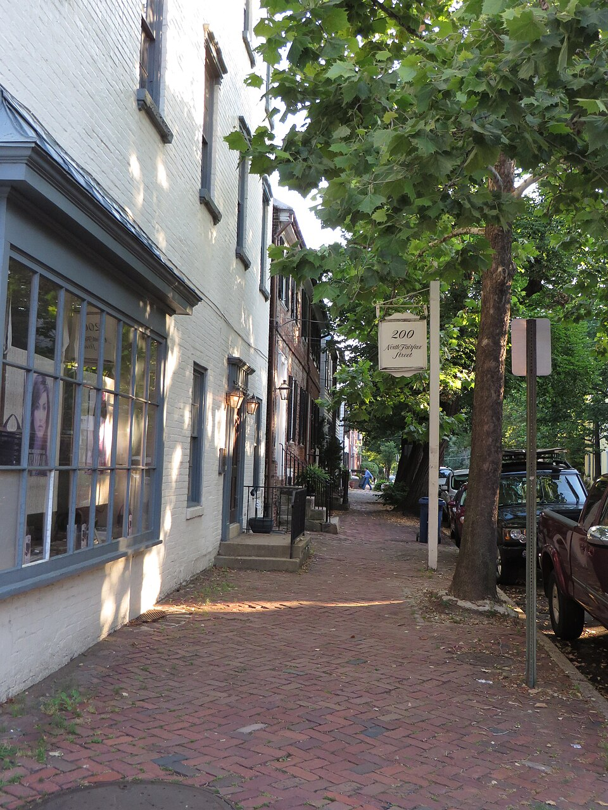

A Word of Warning
Every old town has stories it can't quite confirm and won't quite deny. The people of Foxglove Hollow are careful about what they repeat and even more careful about what they believe. But some stories have been told so many times, by so many different people, that even the careful ones have started to wonder. Here are a few of ours. Take them for what they are.
The Light in the Study Window
Longtime residents of Foxglove Hollow swear that on certain nights, particularly in October, a faint light can be seen burning in the upstairs study at Hawthorn House long after the family has gone to bed. It is not the yellow warmth of a lamp left on by accident. It is steady, almost deliberate, like someone working by candlelight.
The Brackenhollow family has always brushed it off as a reflection from the road, or a trick of the old wavy glass in those windows. Some guests at the inn have asked about it over the years. Eleanor's answer was always the same: "Old houses breathe. You learn to stop asking why." Most people believe her. Most.
The study is on the second floor, east-facing, above the original fireplace. It has been used as a private writing room for as long as anyone can remember. What, if anything, is kept there has never been a subject Eleanor was willing to discuss.

The Missing Records of 1864
The summer of 1864 left marks on Foxglove Hollow that never fully healed. When Confederate cavalry passed through the area in June of that year, the disruption was considerable. Fences broken, stores emptied, livestock taken. But the strangest damage was to the county records.
Several sets of documents from the land office went missing during those weeks, including boundary surveys, transfer records, and at least one set of deeds for parcels north of the millrace. The clerk's office reported the loss. The county noted it. Nothing was ever recovered.
Older residents of Foxglove Hollow still talk about it. Most chalk it up to simple chaos — records get lost in wartime, it is not remarkable. But a few of the old-timers have said something that has stuck with people over the years: that certain families in town seemed a little too relieved when the records never turned up. That certain land questions that might otherwise have been asked simply... weren't.
No one says this on the record. It is the kind of thing Foxglove Hollow knows but does not discuss.

The Daughter Who Left and Never Quite Came Back
Ruth Castellan grew up at Hawthorn House. She left in her mid-twenties and, by most accounts, never really came back — not in the way that means something. She visits. She attended every family event that required it. But she has not called Hawthorn House home in over thirty years.
The town has two versions of why. One version says it was a falling-out with her mother, that Eleanor and Ruth have disagreed on nearly everything since Ruth was a teenager, and that the house was always Eleanor's in a way it never felt like Ruth's. The other version, told more quietly, says that Ruth tried — that she spent years trying to be let in, to help, to matter — and that Eleanor always found a reason to keep her at arm's length without ever saying why.
Foxglove Hollow has never settled on which version is true. Some people believe both can be true at once. Ruth has never offered a third version. She came back this October for the will reading, and those who saw her in town said she looked like someone who had been waiting a very long time for something.

Josephine's Marker
This one is older, and most people in Foxglove Hollow have never heard it at all. A boundary marker stone once stood at the southwest corner of the property now known as the Hawthorn House grounds — or so the older county survey records suggest. It was a substantial stone, the kind cut to stay put for generations, with something carved into its base.
The stone was gone by the fall of 1864. A surveyor's note from that year records its absence and recommends a replacement survey. No replacement was ever conducted. The stone has not been found.
There is a name connected to the stone, if you know to look for it. Most people in Foxglove Hollow do not. But the name has a way of turning up anyway, in old letters, in census gaps, in the kind of silence that forms around a story nobody is sure they have the right to tell.

What the House Keeps
There is an old saying around Foxglove Hollow — the kind nobody remembers learning, they just always seem to know it. A house this old doesn't forget anything. It just decides who gets to remember.
People who have stayed at Hawthorn House over the years describe the same feeling, sooner or later: the sense that the house has more rooms than you can find, more history than anyone has told you, and more patience than anyone who has lived inside it. Eleanor Brackenhollow, for her part, always smiled when guests mentioned it. She never agreed or disagreed. She simply refilled their tea and changed the subject.
Some say the house still keeps watch over the hollow, even now. Some say it always has.